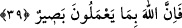
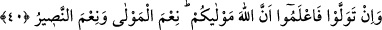

38. İnkâr edenlere: “Eğer vazgeçerlerse, geçmiş günahlarının bağışlanacağını’
söyle. Yok geri dönerlerse kendilerinden öncekilerin hali gözlerinin önündedir!
“İnkâr edenlere:” ifâdesiyle Ebû Süfyan ve arkadaşları kastedilmektedir. “Eğer”
İslâm’a girip Rasûlullah (s.a.v.)’e düşmanlıktan “vazgeçerlerse, geçmiş” İslâm’dan
önceki “günahlarının bağışlanacağını’ söyle. Yok” Rasûlullah (s.a.v.) ile savaşa “geri
dönerlerse” onlardan intikam alır ve helâk ederiz “kendilerinden öncekilerin hali
gözlerinin önündedir!” Peygamberlere karşı birleşenler yok edilmiştir. Nitekim
Bedir’de de müşriklerin başına da aynısı gelmiştir. O halde onlar, bunların benzerini
beklesinler!
Şair şöyle demiştir:
Günahını itiraf eden affı hak eder,
Yapıp ettiğine son verirse eğer.
Allah: “İnkâr edenlere söyle:” der.
“Günahları bağışlanır, vazgeçerlerse eğer.”
39. Fitne ortadan kalkıncaya ve din tamamen Allah’ın oluncaya kadar onlarla
savaşın! (İnkara) son verirlerse şüphesiz Allah onların yaptıklarını çok iyi görür.
Ey müminler, onlar tarafından “fitne” yani şirk “ortadan kalkıncaya”
putperestlerden ve ehl-i kitabdan müşrik kalmayana “ve din tamamen Allah’ın
oluncaya” ya taraftarlarının bütünüyle helâk edilmesi veya öldürülme korkusuyla bu
bâtıl dinlerden dönüp bu dinler yok olana “kadar onlarla” küfür ehliyle “savaşın!”
İnkara “son verirlerse şüphesiz Allah onların yaptıklarını çok iyi görür.” Bâtıl
dinlerden dönmelerine ve müslüman olmalarına karşılık olarak onları mükâfâtlandırır.
40. Eğer yüz çevirirlerse, bilin ki Allah sizin sâhibinizdir. O ne güzel sahip ve ne
güzel yardımcıdır!
“Eğer” hakkı kabulden “yüz çevirirlerse, bilin ki Allah sizin sâhibinizdir.”
mevlânız, dostunuz ve yardımcınızdır. Şu halde O’na güvenin ve onların